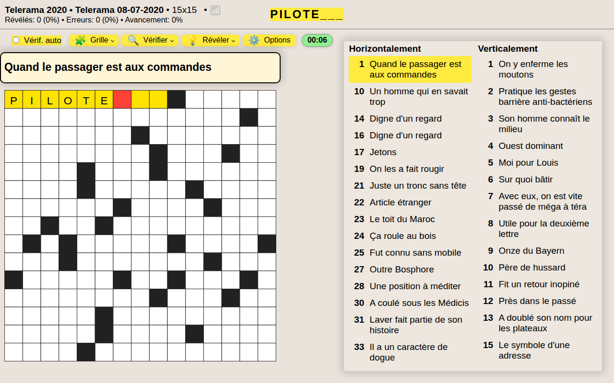
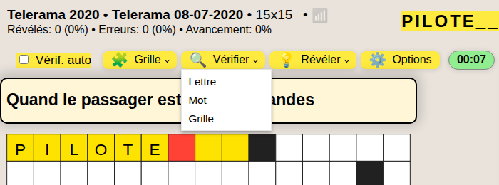
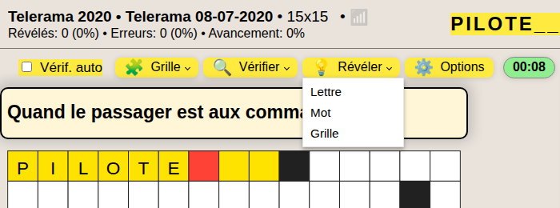
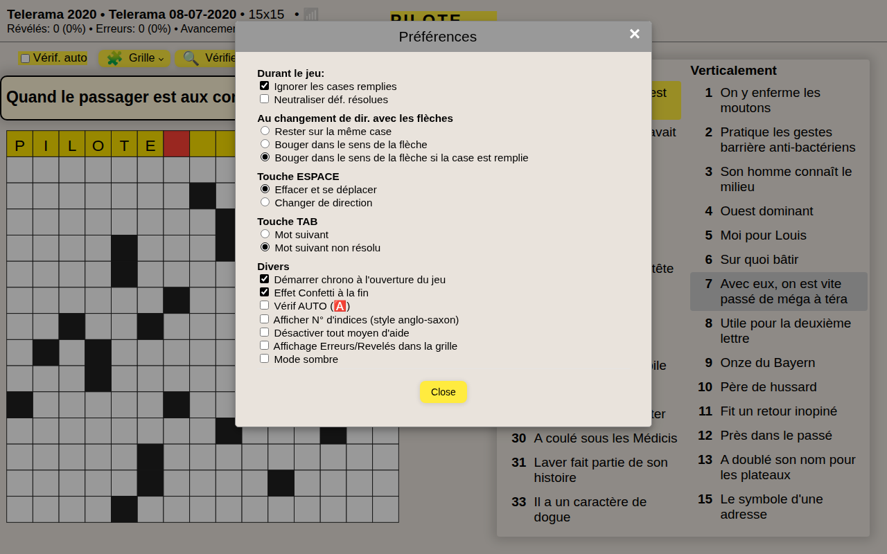

🖥️ Jouer sur ordinateur
Clavier, souris, options et aides à la résolution. Sur un écran large, la grille est à gauche et les définitions (horizontales / verticales) à droite.
1. L'écran de jeu

- En haut : titre, auteur, taille, et la ligne de statistiques (Révélés / Erreurs / Avancement). À droite, le mot en cours avec ses lettres déjà trouvées (
PILOTE__). - Barre de boutons : Autosave (si un serveur est disponible), Vérif. auto, menus Grille, Vérifier, Révéler, Options, et le chrono.
- Bandeau de définition sous les boutons : la définition du mot en cours.
- Cliquer sur une définition dans la liste de droite sélectionne le mot correspondant.
Le menu « Grille »
| Entrée | Rôle |
|---|---|
| Infos / Notes | Informations sur la grille (titre, auteur, copyright) et notes de l'auteur si elles existent. |
| Open … | Ouvrir un fichier de grille depuis l'ordinateur (PUZ, JPZ, XML, CFP, iPUZ). Glisser-déposer possible. |
| Imprimer (PDF) | Génère un PDF de la grille, prêt à imprimer (s'ouvre dans un nouvel onglet). |
| Sauvegarder | Télécharge la grille avec votre progression au format iPUZ. |
| Redémarrer | Efface toute la grille, les statistiques et remet le chrono à zéro. |
2. Raccourcis clavier
Écrire et corriger
| Touche | Effet |
|---|---|
| A … Z | Écrit la lettre (en majuscule) dans la case active puis passe à la suivante. Pas besoin de taper les accents ni les cédilles : tapez E pour É, È, Ê… Selon l'option Ignorer les cases remplies, le curseur saute les lettres déjà écrites. Avec Vérif. auto, une lettre fausse reste affichée en erreur et le curseur ne bouge pas. |
| ⌫ Retour arrière | Efface la case active puis recule d'une case. |
| Suppr | Efface la case active sans bouger. |
| Espace | Selon l'option « Touche ESPACE » : efface la case et avance (par défaut) ou change de direction (horizontal ⇄ vertical). |
Se déplacer
| Touche | Effet |
|---|---|
| ← → ↑ ↓ | Déplace la case active d'une case. Les cases noires sont franchies. Si la flèche est perpendiculaire au mot en cours, le sens de saisie change ; la case active bouge ou non selon l'option « Au changement de direction avec les flèches ». |
| ⇧ Maj + flèche | Saute directement au mot suivant dans la direction de la flèche. |
| Tab ou Entrée | Passe au mot suivant (ou au prochain mot non résolu, selon l'option « Touche TAB »). |
| ⇧ Maj + Tab (ou + Entrée) | Revient au mot précédent. |
| Début / Fin | Va à la première / dernière case du mot en cours. |
Divers
| Touche | Effet |
|---|---|
| ⇧ Maj + Échap | Pause / reprise du chrono (même effet qu'un clic sur le chrono). |
| Ctrl + . (ou ⌘ + .) | Ajoute / retire un cercle sur la case active (utile pour marquer une lettre). |
| Grilles « sans diagramme » | . pose ou enlève une case noire ; Espace change la direction ; les flèches imposent la direction. (Seulement pour ce type de grille.) |
3. Souris
- Clic sur une case : sélectionne la case et le mot qui la traverse.
- Double-clic sur la case déjà sélectionnée : change de direction (horizontal ⇄ vertical).
- Clic sur une définition (liste de droite) : sélectionne ce mot.
- Clic sur le chrono : pause / reprise. Le chrono se met aussi en pause tout seul lorsque l'onglet est masqué ou perd le focus, et repart au retour.
4. Aides : vérifier et révéler
Deux familles d'aides existent. Elles apparaissent dans la barre de boutons (sauf si vous avez choisi « Désactiver tout moyen d'aide »).


🔍 Vérifier (ne donne pas la réponse)
Choisissez Lettre, Mot ou Grille : les lettres que vous avez saisies et qui sont fausses sont signalées (case en rouge / barrée). Les cases vides ne sont pas touchées. Chaque erreur détectée est ajoutée au compteur Erreurs.
Vérif. auto (case à cocher dans la barre, ou dans les options) : vérifie automatiquement chaque lettre dès que vous la tapez. Lorsqu'elle est active, le menu « Vérifier » est masqué.
💡 Révéler (donne la réponse)
Écrit la bonne lettre / le bon mot / toute la grille. La grille entière se révèle via le menu.
Les raccourcis « lettre » et « mot »
Pour aller vite sans passer par la souris, trois raccourcis clavier révèlent la solution — avec ou sans pénalité dans les statistiques :
| Raccourci | Effet | Compté dans « Révélés » ? |
|---|---|---|
| Inser | Révèle la lettre de la case active. | Oui |
| Ctrl + Inser | Révèle le mot en cours. | Oui (chaque lettre qui n'était pas déjà juste) |
| ⇧ Maj + Inser | Révèle le mot en cours, « accélérateur de frappe ». | Non |
Votre clavier n'a pas de touche Inser (ordinateurs portables) ? Utilisez alors le menu Révéler.
Un mot qui contient déjà des lettres justes ne compte que pour les lettres qui étaient fausses ou vides.
5. Tableau « compte comme triche ? »
| Action | Comment | Compte comme « Révélé » | Compte comme « Erreur » |
|---|---|---|---|
| Vérifier lettre / mot / grille | Menu Vérifier | — | oui, pour chaque lettre fausse détectée |
| Vérif. auto | Case à cocher | — | oui, à chaque lettre fausse |
| Révéler une lettre | Menu ou Inser | OUI | — |
| Révéler un mot | Menu ou Ctrl+Inser | OUI | — |
| Révéler un mot « accélérateur » | Maj+Inser | NON | — |
| Révéler toute la grille | Menu Révéler › Grille | OUI | — |
Les compteurs sont enregistrés avec la grille et réapparaissent à la reprise du jeu. Ils sont remis à zéro par Grille › Redémarrer.
6. Les options (Préférences)
Cliquez sur ⚙️ Options : la fenêtre « Préférences » s'ouvre. Chaque réglage est enregistré immédiatement et conservé d'une grille à l'autre. Le clavier est désactivé pendant que la fenêtre est ouverte.

Durant le jeu
| Option | Explication |
|---|---|
| Ignorer les cases remplies (coché par défaut) | Quand vous tapez une lettre, le curseur saute les cases du mot déjà remplies pour aller à la première case vide. Décochée : il avance simplement d'une case. |
| Neutraliser déf. résolues | Grise dans la liste les définitions dont le mot est entièrement rempli, pour repérer d'un coup d'œil ce qui reste à faire. |
Au changement de direction avec les flèches
Que se passe-t-il quand vous appuyez sur une flèche perpendiculaire au mot en cours (ex. ↓ alors que vous écrivez à l'horizontale) ?
| Choix | Effet |
|---|---|
| Rester sur la même case | La première pression ne fait que changer le sens de saisie. Appuyez une seconde fois pour avancer. |
| Bouger dans le sens de la flèche | Change le sens et déplace tout de suite le curseur d'une case. |
| Bouger dans le sens de la flèche si la case est remplie (par défaut) | Combine les deux : sur une case vide, la flèche ne fait que changer le sens ; sur une case remplie, elle change le sens et avance. |
Touche ESPACE
- Effacer et se déplacer (par défaut) : vide la case et passe à la suivante.
- Changer de direction : bascule entre horizontal et vertical (utile pour les grilles aux mots entrecroisés dans deux sens).
Touche TAB
- Mot suivant : va toujours au mot suivant dans l'ordre des définitions.
- Mot suivant non résolu (par défaut) : saute les mots déjà complets.
Divers
| Option | Explication |
|---|---|
| Démarrer chrono à l'ouverture du jeu | Le chrono se déclenche dès que la grille s'affiche. Sinon, lancez-le vous-même en cliquant dessus. |
| Effet Confetti à la fin | Animation de confettis quand la grille est terminée. |
| Vérif AUTO (🅰️) | Même réglage que la case « Vérif. auto » de la barre : chaque lettre fausse est signalée dès la frappe et le curseur ne bouge pas. |
| Afficher N° d'indices (style anglo-saxon) | Affiche en petit, dans le coin de chaque case de départ de mot, le numéro de la définition (comme dans un journal papier). Désactivé par défaut : la grille reste épurée. |
| Désactiver tout moyen d'aide | Mode « puriste » : les menus Vérifier et Révéler, la Vérif. auto et les raccourcis Inser sont désactivés. Idéal pour un défi honnête ou pour un enfant tenté de tricher. |
| Affichage Erreurs/Révélés dans la grille | Marque dans la grille les cases révélées ou fausses, pour visualiser vos « tricheries ». Fonctionne lorsque la Vérif. auto est active. |
| Autosave Crossword (↕️) | Visible uniquement si un serveur de sauvegarde est configuré : envoie la grille en cours vers ce serveur à chaque modification. La sauvegarde locale (dans le navigateur) est toujours active, quoi qu'il arrive. |
| Mode sombre | Thème sombre pour jouer le soir. |
7. Statistiques et chrono
La ligne sous le titre résume votre partie :
Révélés: 3 (1%) • Erreurs: 5 (2%) • Avancement: 42%
- Révélés : nombre de cases dont la lettre vous a été donnée (et pourcentage de la grille).
- Erreurs : nombre de cases où une lettre fausse a été détectée (par Vérifier ou la Vérif. auto).
- Avancement : part de la grille remplie avec les bonnes lettres.
Le chrono en haut à droite compte le temps de jeu effectif. À la fin de la grille, un message de félicitations indique votre temps.